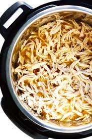

Shredded Chicken

Description
Perfectly shredded chicken.
Ingredients
- 2 pounds boneless skinless chicken thighs
- 1 cup chick broth
- salt and pepper to taste
Steps
- Combine all ingredients in instant pot.
- Lock lid and seal vent.
- Cook chicken on high pressure for 10 minutes.
- Let instant pot naturally depressurize.
- Shred chicken with forks.
Go Home